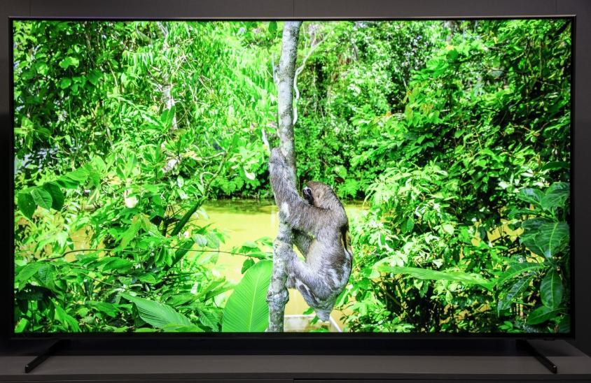

Samsung apuesta por el 8K: sus nuevos televisores QLED 8K tienen IA, hasta 4.000 nits y llegarán a España en octubre
Si durante el pasado CES 2018 ya se anticipaba la llegada de las teles 8K, esta IFA 2018 ha servido para reafirmarlo. LG ya presentó su primer televisor OLED con resolución 8K en 88 pulgadas y ahora es el turno de Samsung, quien nos muestra un producto más "para las masas" con su nueva gama de televisores QLED 8K Q900R, que a diferencia de LG, estos estarán disponibles a la venta en sólo unas semanas.
Estos nuevos televisores QLED 8K de Samsung estarán disponibles en tamaños de 65, 75 y 85 pulgadas. Samsung sabe que ahora mismo el problema será encontrar contenido en 8K, por ello una de sus armas más importantes será el escalado de imagen usando inteligencia artificial, algo que solucionaría, por el momento, la falta de contenido, o al menos eso es lo que asegura Samsung.
Resolución, HDR y escalado
Por supuesto el 8K es la parte atractiva de esta nueva familia de televisores de Samsung, por lo que han buscado dotarlas de herramientas que aprovechen esta resolución y nos presenten imágenes con total nitidez. Por lo que la compañía destaca que su gama Q900R será capaz de producir picos de brillo de hasta 4.000 nits, algo que sólo estaba limitado a dispositivos profesionales en la industria cinematográfica.
Con estos televisores, Samsung está presentando una tecnología que han bautizado como '8K AI Upscaling', que, según explican, servirá para hacer escalado en las imágenes hacia 8K usando inteligencia artificial, y que sería compatible con cualquier fuente conectada al televisor, ya sea desde HDMI, streaming, USB e incluso al duplicar la imagen desde nuestro smartphone.
Según Samsung, la tecnología '8K AI Upscaling' estaría incorporada en el nuevo 'Quantum Processor 8K', con el que se reconocería el contenido de origen para realizar el escalado que no sólo sería para la imagen, sino también para el audio.
La falta de contenidos nativos 8K hace que se centren en ese reescalado para mejorar notablemente la calidad de las fuentes actuales (SD, HD, FullHD, UHD) ya que dejan de utilizar interpolación para reescalar y pasan a usar IA, con 256 algoritmos que actúan de una forma concreta según el tipo de imagen y que van mejorando con el tiempo.
Así mismo, se cuenta con la tecnología 'Direct Full Array Elite', con la que afirman es posible obtener el 100% de volumen de color, lo que nos daría una mayor precisión en las tonalidades así como un mejor contraste y control de la retroiluminación. Estos televisores serán Full Array de 480 zonas e incluso más según el modelo, siguiendo la tendencia de las Q9FN que también cuenta con 480 zonas de retroiluminación.
Dentro de todo esto, Samsung también incorpora algo que han llamado 'Q HDR 8K', que se basa en la tecnología HDR10+ y que permitiría ofrecer imágenes con mayor realismo aprovechando las posibilidades de la resolución 8K.
Al igual y como ocurre a día de hoy con la actual generación QLED, estos nuevos QLED 8K incorporan 'One Connect', que permite tener todas las conexiones por separado a través de un dispositivo que se conecta al televisor a través de un cable óptico. Esto hace que tengamos un solo cable de cinco metros donde se incluye tanto la conexión óptica como la alimentación eléctrica, y así evitamos tener la conocida maraña de cables.
No obstante, en Samsung han indicado que seguirán estudiando la evolución del mercado en el ámbito de los estándares de conectividad: no descartan volver a ofrecer el 'One Connect' independiente para que la gente pueda conservar el panel y actualizar "el cerebro" de estos televisores.
No obstante, en Samsung han indicado que seguirán estudiando la evolución del mercado en el ámbito de los estándares de conectividad: no descartan volver a ofrecer el 'One Connect' independiente para que la gente pueda conservar el panel y actualizar "el cerebro" de estos televisores.
Los nuevos televisores QLED 8K Q900R de Samsung se pondrán a la venta en España durante el mes de octubre. Los precios van desde los 5.000 euros del modelo de 65 pulgadas a los 15.000 euros del modelo de 85 pulgadas.
Los actuales televisores QLED de gama alta cuestan 3.500 euros, por ejemplo, de modo que esas etiquetas parecen estar bien alineadas con esa estrategia de precios de Samsung en sus televisores tope de gama.